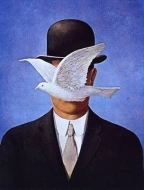
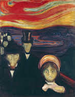

-My gallery with art-
The Starry Night
.jfif)
.jfif) The Starry Night was painted by Van Goah. The painting was symbolized for different reasons.
The Starry Night was painted by Van Goah. The painting was symbolized for different reasons.
- The swirling sky: Represents Van Gogh's inner emotions.
- The stars and moon: symbolize hope, or the idea of something greater beyond earthly life.
- The village: Represents peace and stability constrastin with the sky.
- The cypress tree: Possibly showing Van Gogh's thoughts about death.
The Son of Man

The son of man was painted by Rene Magritte in 1964. It shows a man in a suit and bowler hat , with a pigeon in front of his face. The painting is all about mystery, identity, and what we choose to reveal or hide.
The pigeon blocks his face, suggesting that we can never fully see or understand someone.
Anxiety

The Anxiety was painted by Edvard Munch in 1894. A group of people with pale, distressed faces stand on a bridge, their expressions hollow and hauting. The sky is painted in swirling red and orange,
creating a tense, unsetting background. This painting gives the meaning of anxiety, fear and despair, showing how those feelings can take over both the mind and surroundings.
Back
Home